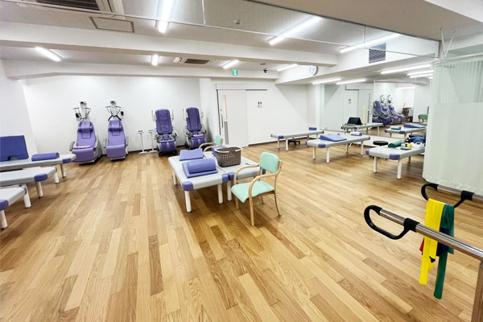
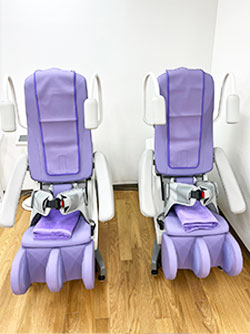
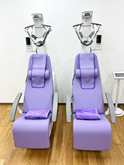
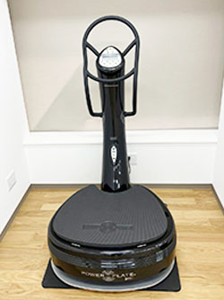
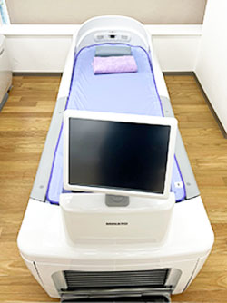
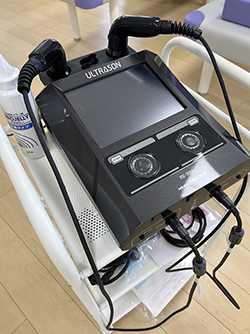
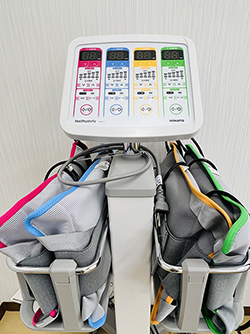

リハビリテーション
怪我の再発防止・健康で長生きをするためのリハビリ
怪我の治療と早期回復のためのリハビリを行っております。
また、多くの方が怪我をしない身体作り・バランス感覚や筋力UPなどを目的としております。
手術に抵抗がある方も『切らずに治す』リハビリをおすすめいたします。

運動器リハビリテーション(Ⅰ)の施設基準
当院では2025年9月に運動器リハビリテーション(Ⅰ)の施設基準を取得しております。
- 医師
- 運動器リハビリの経験を有する（運動器リハ経験3年以上又は運動器リハ研修を修了）専任の常勤医師が勤務している。
- スタッフ
- 専従の常勤理学療法士又は作業療法士が合わせて4名以上勤務している。
- 訓練室
- 専用の機能訓練室が45㎡以上である。
- その他
-
- 発症、手術又は急性増悪から150日以内
- リハビリの記録（医師の指示、実施時間、訓練内容、担当者など）は、患者ごとに同一ファイルで保管し、常にスタッフにより閲覧出来ること
- 定期的に担当の多職種が参加するカンファレンスを開催すること
リハビリ機器のご紹介
腰椎牽引治療器
腰椎に引く力を加えることにより、筋のストレッチを行います。また脊髄での神経の圧迫を和らげることで痛みやしびれを緩和させる治療法です。

頚椎牽引治療器
頚椎に引く力を加えることにより、筋のストレッチを行います。また脊髄での神経の圧迫を和らげることで痛みやしびれを緩和させる治療法です。

パワープレート
ハードな運動を好まない、身体を動かすことが難しいご年配の方でも、短時間でそれぞれのコンディションに合わせたトレーニングやリラクセーションが可能です。

ウォーターベッド
ウォーターベッドは水圧による優しいマッサージで、血液循環の向上、腰痛や筋肉痛の緩和などに効果があります。癒しの効果もあります。

超音波治療器
超音波骨折治療法は、プローブを患部に固定した状態で出力の弱い超音波を断続的に発振することで、骨折部位に音圧刺激を与え、骨の癒合を促進します。

ホットパック
体を温めて治療する温熱療法です。患部を温めることによって筋肉はやわらぎ、血行を促進させ、痛みの緩和が期待できます。
